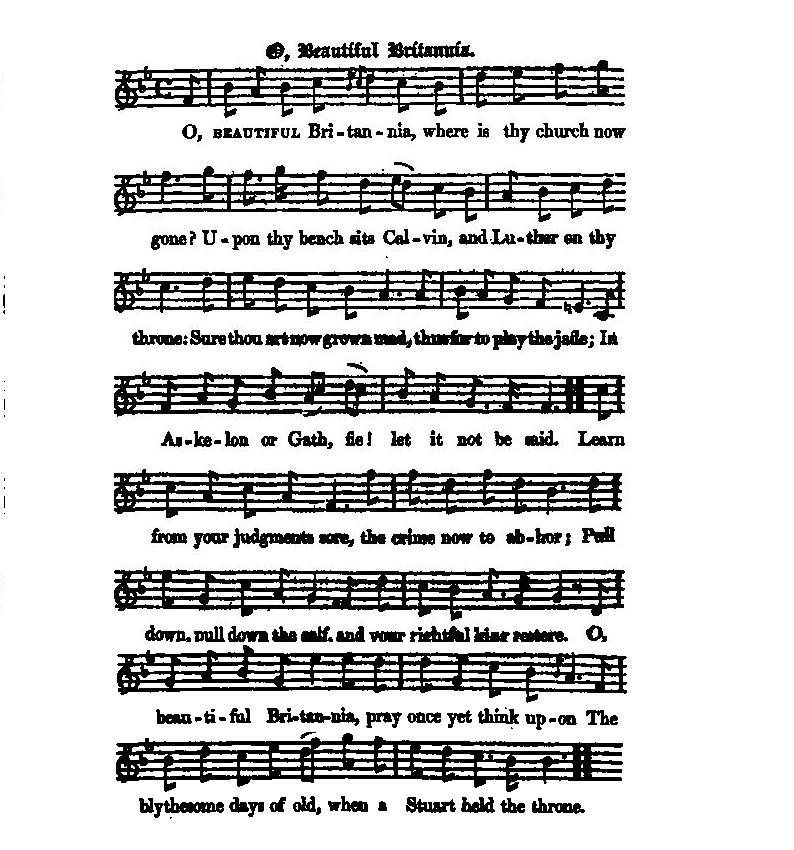

O, Beautiful Britannia
O, Britannia la Belle
From "The True Loyalist, 1779, page 65 and
Hogg's "Jacobite Relics", vol. 1, N° 84, 1819
Tune - Mélodie
"The bonny grey-eyed Morning"
from Hogg's "Jacobite Relics" , vol. 1, N° 84, 1819
Sequenced by Christian Souchon
|
To the tune
"Chappell (1859) asserts the Scots appropriated "The Bonny Grey-eyed Morn" or "Jockey rous'd with love," composed by Jeremiah Clark , for their tune, but that it was English in origin. He says Clark’s composition was sung in D’Urfey ’s comedy of "The Fond Husband or The Plotting Sisters" (1676). Henry Playford published it in his "Dancing Master", Part II, 2nd Edition (1698) and in all subsequent editions until the demise of the series in 1728. John Walsh published it in his "Compleat Country Dancing Master" (London, 1718). Kidson (1922) identifies it as an Anglo-Scotch song, the music being perhaps composed by Jeremiah Clark. Stenhouse doubted that Clark(e) composed the melody, and Grove’s Dictionary gives dates for Clarke that would make him only six or seven years old when "The Fond Husband" was produced. Oswald included it in the "collection of Scottish Tunes", calling it “The Old Gray-ey’d morning.” A version also appeared in Oswald’s seventh book of "The Caledonian Pocket Companion" as “The Gray Ey’d morning” albeit in a different version of the tune, in ¾ time. It also appears in D’Urfey’s "Pills to Purge Melancholy", vol. III (1719), on half-sheet music, and in John Gay's The Beggar's Opera (1729) under the title "'Tis woman that seduces all mankind." It was a popular tune, much employed in ballad operas, and also appears in Cibber’s "Patie & Peggy" (1730), "The Jew Decoy’d, or the Progress of a Harlot" (1733), "The Happy Lovers, or the Beau Metamorphos’d" (1736), Ramsay’s "The Gentle Shepherd" , and others." The first stanza of the song in D'Urfey's "Fond Husband" runs: The bonny grey-ey'd Morn began to peep, When Jockey rous'd with Love came blithly on ; And I, who wishing lay, depriv'd of sleep, Abhor'd the lazy hours that slow did run. But muckle were my joys when in my view, I from the window spy'd my only dear ; I took the wings of Love, and to him flew, For I had fancy'd all my Heav'n was there. Source "The Fiddler's Companion" (cf. Links). |
 |
A propos de la mélodie:
"Le musicologue Chappell (1859) affirme que les Ecossais ont fait leurs le "Joli matin aux yeux gris" ou "Jockey mu par l'amour", composé par Jeremiah Clark en raison de sa mélodie, mais que celle-ci était anglaise à l'origine. Il dit que la composition de Clarke fut chantée dans une comédie de d'Urfey intitulée "l'Epoux affectueux" ou "la Conspiration des sœurs" (1676). Henry Playford publia la mélodie dans son "Maître à danser", Tome II, 2ème édition (1698) et dans toutes les éditions suivantes jusqu'à l'extinction de la collection en 1728. John Walsh la publia dans son "Compleat Country Dancing Master" à Londres en 1718. Kidson (1922), quant à lui, y voit un chant anglo-écossais dont la musique a peut-être été composée Par Jeremiah Clark. Stenhouse doutait que Clark(e) ait composé la mélodie, tandis que le dictionnaire de Grove donne pour Clarke des dates dont il résulte qu'il avait six ou sept ans seulement, lorsque l'"Epoux affectueux" fut donné pour la première fois. Oswald la fait figurer, sous le nom de "The Old Gray'ed morning", dans sa "collection d'Air écossais". On la retrouve dans le 7ème fascicule de son "Vadémécum Calédonien" sous le même titre. Elle figure aussi au nombre des "Pilules pour purger la mélancolie, volume III publiées par d'Urfey en 1719 et dans l'"Opéra du Gueux" de John Gay (1729) sous le titre "C'est la femme qui séduit tout le genre humain". C'était un morceau fort prisé dans les "ballad operas" tels que "Patie et Peggy" de Cibber (1730), "le Juif leurré" ou "la Carrière d'une trainée" (1733), "les Amants heureux" ou le "Beau métamorphosé" (1736) , "le Bon Berger" de Ramsay et bien d'autres." La première strophe dans l'"Epoux affectueux" de D'Urfey s'énonce ainsi: Les beaux yeux gris de l'aube commençaient à s'ouvrir, Quand, enflammé d'amour, je vis le gai Jockey surgir. Moi que le désir ronge, moi que le sommeil fuit, Maudissais les heures lentes qui m'écartaient de lui. Et c'est avec délice que j'aperçus soudain Lorgnant par la fenêtre mon bien-aimé qui vient. L'amour alors ses ailes me prêta pour voler A sa rencontre, affolée de tant de félicité. Source "The Fiddler's Companion" (cf. liens). |

|
O BEAUTIFUL BRITANNIA
1. O, Beautiful Britannia, where is thy church now gone? Upon thy bench sits Calvin, and Luther on thy throne: Sure thou art now grown mad, thus for to play the jade; In Askelon or Gath, [1] fie! let it not be said. Learn from your judgments sore, the crime now to abhor; Pull down, pull down the calf, and your rightful king restore. O, beautiful Britannia, pray once yet think upon The blythesome days of old, when a Stuart held the throne. 2. Then hadst thou riches, peace, content in every face; But now, alas! alas! all's gone to thy disgrace: Thy wishes they are spent, thy constitution's rent, By rakes and Whigs, these for thy ruin bent. Thy sons, into a car, to Tyburn dragged are, [2] Or else, alas! alas! from home removed far. O, beautiful Britannia, if thou wouldst think upon The blythesome days of yore, the days of sixty-one, [3] 3. Thou wouldst not fondly doat upon a German sot; A sow, a sow, a sow [4] more suits his lot; Nor would his madcap son ever possess thy throne, Nor would again be play'd the game of forty-one: [5] But all, with one consent, for restoration bent, Might soon call home the king, relieve the innocent. The bonny gray-eyed morning begins for to peep; [6] O, beautiful Britannia, I pray no longer sleep; 4. But from the Gallic shore call royal Jamie o'er, Resist, resist, resist him no more; And let no cuckold be still ruler over thee, Nor any German bastard, begot in poverty. [7] And let no Whig command, discharge them off thy land; Discard, discard, discard that lawless band. The bonny gray-eyed morning, since it begins to dawn, O, beautiful Britannia, to cloud it be not drawn. 5. By, shameless whiggish pride, but ope thy arms wide, Embrace, embrace, embrace the son, thou art the bride; Then would no blood be spilt, nor wouldst thou spend thy guilt. Pray hasten, O Britannia, thy marriage to complete. By shameless whiggish pride, but open thy arms wide, Embrace, embrace, embrace the son, thou art the bride; Then would no blood be spilt, nor wouldst thou spend thy gilt. Pray hasten, O Britannia, thy marriage to complete. Source: "The Jacobite Relics of Scotland, being the Songs, Airs and Legends of the Adherents to the House of Stuart" collected by James Hogg, published in Edinburgh by William Blackwood in 1819. |
BRITANNIA LA BELLE
1. Où va donc ton église, belle Britannia? Sur ton banc Calvin siège et Luther te tient lieu de roi As-tu perdu l'esprit, que tu te prostitues? Serait-on en Ascalon ou bien à Gath, [1] qui l'eût cru? Ecoute ton bon sens: le crime ne paie pas! Renverse tes idoles et restaure ton roi! Britannia la belle, souviens-toi, je t'en prie, Des jours heureux où les Stuarts exerçaient la monarchie! 2. La paix et la richesse, les visages contents Font place à la détresse, hélas, rien n'est plus comme avant: Constitution qu'on viole, citoyens bâillonnés Par des Whigs et des traîtres, acharnés à te ruiner. Tes fils dans la charrette à Tyburn [2] sont conduits, Ou, sort parfois bien pire, condamnés à l'exil. Britannia la belle, souviens-toi, je t'en prie, Des beaux jours de soixante-et-un [3]: c'était presqu'aujourd'hui. 3. Menacés de gâtisme par un sot de Germain, Qui suivant sa nature a pris une truie pour catin, [4] Qui va léguer son trône à son idiot de fils; Comme en quarante-et-un [5], nous devrons jouer au jeu joli. Mais que l'accord s'installe en vue de restaurer Le roi, plus de scandale, finie l'iniquité! L'aube ouvre ses paupières où luit un reflet gris. [6] Eveille-toi, Britannia, trop longtemps assoupie! 4. Des rivages de Gaule, Jacques lance un appel L'ignorer, l'ignorer, l'ignorer serait criminel D'un trône qu'il usurpe, chassons l'oiseau voleur, Ce bâtard germanique et ce famélique imposteur! [7] Les Whigs et leur empire ont fait leur temps, ma foi Il est temps que l'on chasse ces intrigants sans loi. Des paupières de l'aube émane une clarté. Ne vas pas, belle Britannia, l'obscurcir de nuées 5. Les Whigs t'ont égarée. Ouvre bien grand les bras! Embrasse, embrasse donc le fiancé qui vient à toi! Assez de sang qui coule: tes péchés sont absous! Empresse-toi, Britannia, de rejoindre ton époux! Les Whigs t'ont égarée. Ouvre bien grand les bras! Embrasse, embrasse, embrasse celui qui vient à toi! Assez de sang qui coule: tes péchés sont absous! Empresse-toi, Britannia, de rejoindre ton époux! (Trad. Christian Souchon(c)2010) |
|
[1]
Askelon, Gath
: Cities of the "Philistine Pentapolis" (with Ashdod, Ekron and Gaza). Maybe another Pentapolis is meant, to which the debauched Sodom and Gomorrha belonged.
[2] Tyburn : the place where the first permanent gallows was set up, near London in 1571 (close to the present location of Marble Arch). [3] Sixty-one : On 23 April 1661 Charles II was crowned King of England and Ireland at Westminster Abbey. [4] Sow : George I's mistress, the Countess of Darlington [5] Forty-one : 1641, beginning of the English Civil war that caused the execution of King Charles I. [6] Gray-eyed morning etc.. borrowed from the original song (see "note to the tune" above) [7] German bastard : Allusion to Königsmarck . |
[1]
Ascalon, Gath
: deux des villes qui, avec Achdod, Ecron et Gaza, composaient l'ancienne Pentapole des Philistins. L'auteur pense peut-être à une aitre Pentapole, celle dont faisaient partie Sodome et Gomorrhe où régnait la débauche.
[2] Tyburn : emplacement où fut dressé le premier gibet fixe de Londres en 1571 (près de l'actuel Marble Arch). [3] Soixante-et-un : le 23 avril 1661, Charles II fut couronné roi d'Angleterre et d'Irlande à Westminster. [4] Truie : la maîtresse de George I, la Comtesse de Darlington [5] Quarante-et-un : 1641, début de la Guerre civile anglaise qui entraîna l'exécution du roi Charles I. [6] L'aube ouvre ses paupières, etc.. emprûnté au chant d'origine (cf. "note à propos de la mélodie" ci-dessus) [7] Bâtard germanique : Allusion à Königsmarck . |
|
|
|